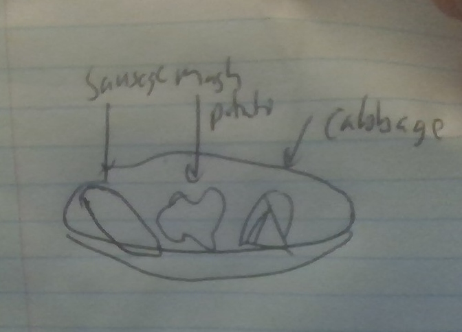

Cabbage and Sausage

Description
A favorite of Grandpa Schirmer's on any day. It actually always includes potatoes. Serves two.
Ingredients
- 4 German sausages, like bratwurst or even bockwurst if you like.
- two big russet potatoes, as big as possible.
- a purple cabbage
- one stick of butter
- salt and pepper
- plain yogurt with full fat levels
Steps
- Put pot of water on the boil.
- While water warms up, peel the potatoes and cut them into cubes
about 1 cubic inch in volume, then put them in.
- Turn the heat on a second pan and throw the sausages on to brown them
- While sausages are browning, cut the cabbage. Slice it like bread
so that it forms disks about one inch thick, then cut the disks radially
into four pieces each like a pizza.
- After sausages are browned but before they are cooked, take them off, pour water in the same pan,
throw cut cabbage in the pan and cover. Turn the heat up to boil
the cabbage for ten to fifteen minutes.
- Once this is done, check the potatoes to make sure they are not too
soft. If they are, turn the potato pot heat down to simmer.
- Throw the sausage back in the pan with the boiling cabbage, cook
another fifteen minutes or so covered.
- Turn the heat off on the cabbage and sausage, then pour the water out
of the potato pan. Put three quarters of a stick of butter into the hot
potatoes and salt and pepper, and mash them.
- The potatoes will probably be too thick with butter, put in some of
that watery yogurt to give them a smoother texture.
- Serve the dinner on plates, keeping each item of food separate. Put
remaining butter on cabbage, salt and pepper it too.
Optional: If your finances are strong enough, consider putting
fancy mustard on your plate to dip the sausage in. It should have the little
seeds in it and be more yellow than Grey Poupon, imported from Germany.
Otherwise don't even bother with mustard. Also bread with blackberry jelly
goes well with the meal.
Warning: Do not boil the cabbage and sausage in
beer. It will dessicate the sausage.
Home